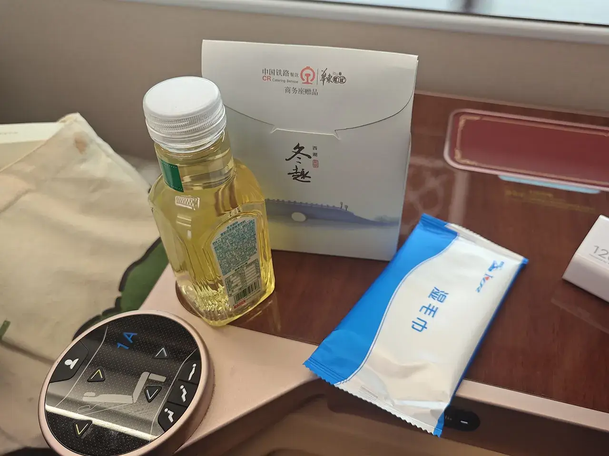

正文
2.21
要开学了！😭本南蛮野人本次决定拜访中原大地！
购买机票￥383，07:45 福州长乐-09:55 郑州新郑。贪便宜买了个很早的机票，本来就得四点多起来去坐机场大巴，结果前一天说延误至 8:35 才起飞，这意味着可以 06:25 再去坐大巴，中！
05:42 极黑之夜，万物凋零
手机上拍的感光效果比肉眼看的还要好😵，于是我特意地调暗了一些。
06:33 过江！
这个点出发不会堵车，中！
07:09 长乐机场
不到 40 分钟，中！
07:36 飞往塔城
要坐摆渡车，不中！
08:10 摆渡车中
要起飞了！
08:10 登机
果然便宜没好货😵座位巨挤，然后还因为空中交通管制又延误到 9:02 才起飞，不中！
11:11 降落
看着都是可爱小雾霾，不中！
11:26 探访河南，寻觅千年
有些文物在国博已经见过了🤔。
11:45 新郑机场站
本来登机前买了个 G6648 11:48 新郑机场-12:12 郑州的票，结果飞机又延误了怕赶不上就提早改签成 G3192 12:27 新郑机场-12:52 郑州，其实是可以压哨赶上的😵。
想着也没啥饭可以吃，就买了个商务座￥60，想着能够骗混一个午餐来着。
新郑机场站没有商务座候车室，不中！
12:22 地铁？
新郑机场离郑州可远，连高铁都要快半小时😵，不中！
12:24 商务座
第一次体验商务座😇。整个车厢就我一个人，位置特别宽敞可以直接躺着。
乘坐商务座可以获得乘务员的体贴服务！一共进来了四次，一次发了小零食，一次问我午饭吃啥，一次说我点的那款没了得换一款，一次提醒我该下车了（明明就一站）😇。

应该是一等座也有的小零食，内含牛肉粒 + 沙琪玛 + 青豆 + 瓜子仁 + 猪肉铺，中！
送的盒饭应该是来不及在车上吃的，我选择打包回民宿吃（后面吃了一半就扔了，真是太难吃了）。
12:50 郑州站
郑州站不支持换乘地铁免安检，不中！
13:01 郑州地铁
看一下郑州地铁运行线路图，密密麻麻纵横交错，看着有点像北京😵。
你还可以选择坐地铁去圃田！但是我选择坐地铁去白庙站。
13:14 地铁厕所
看着郑州地铁站特别高级，还有厕所，让我觉得这个城建还是挺牛的。
13:34 北方第一省会
出来后看着城建也就一般般了😵，也是各种平房。
13:58 抵达民宿
挑了个离河南博物院和一个可以直达花园口，又有个地铁口的民宿，￥101.68。入口难找的，找了半天😵。
14:34 河南博物院🤩
买了瓶水果茶，结果味道有点酸，喝一半扔了，不中嘞不中😭。
作为一个没啥旅游景点的城市，唯一值得玩的就是这个作为文物大省省会的博物院了。
这个博物院从面积上看看着好像还没福建的大😐。
总的来说，这个博物院里的文物还是很不错的，就是很多在国博里能看到更牛逼的😵，还是京爷的东西好。
再把之前写国博 Diary 的 exhibits.js 和 exhibits.css 放过来了。
14:40 夏商周
作为中华文化的发祥地，这一部分都是最牛逼的了，我觉得后面的很多反而还没有这一系列的精美。
11:25 秦汉魏晋南北
相邻地区的货币样式看着很相似。
秦王扫六合后，很快又改朝换代了，因此看着也没啥文物😵。
15:47 隋唐五代
杨广大帝看上了关外的洛阳，修建东都！但是没几年就倒台了！
后来武曌大帝再次看上了洛阳，命名为神都！
16:06 宋金元
神都洛阳被打成稀巴烂了😭！后来五代（后唐除外）至宋朝选择只好建都开封！
后来开封又被金朝打成稀巴烂了😭！
16:15 明清
随着开封也被打成稀巴烂后，河南很长一段时间再无大城市了……
明清展馆里的展品明显少了很多。我感觉这一时期的展品还不如福建的呢🤧。
16:17 黄釉扁壶
16:29 BRT
后面也没啥展品了，再加上一大早起来舟车劳顿跑到现在，我决定坐公交回民宿结束今天的行程。
一开始看到郑州有这么多地铁的前提下居然还能有 BRT，真是太中了！然而，坐上去才发现这跟厦门的不一样，小车是可以插到公交车前面的，于是就堵了好久，真是太不中了！
17:01 乎拉唐
在这一天美丽泉州哥已经先行飞往郑州品尝过传说中的胡辣汤，并且得出了喝不惯的结论。于是我抱着不高的期望买了一碗尝尝，￥9。
味道除了比较重以外，冬天喝还是挺带劲的。
外面全是雾霾，晚上也没再想出来转转了，我选择睡觉！
2.22
05:57 再来一碗！
换了一家又干了一碗胡辣汤，￥7。这碗没有野山菌便宜了两块钱！但是确实没有￥9 的好喝😇。
之后就该坐公交车去看看黄河了！
07:00 黄河不夜城
一路上没咋堵车就到了黄河边。看着外面也是一片荒凉😵。
07:01 将军祠
这里记录的是《冯庄漫决及其堵复》的事件，说明在光头干坏事之前，这里一直都受黄河水患的困扰😵。
07:02 花园口险工
这里记录的是《花园口险工》的事件，说明在光头干坏事之后，这里还是受黄河水患的困扰😵。
07:06 引黄闸
07:07 共饮黄河水
看着浑浊的黄河，经过处理也能喝。
07:07 灰蒙蒙
对面就是电影《1942》的事发地之一了。鲤鱼焙面，延津做法！
07:14 界碑
公元一九三入年六月七日至九日，国民党军队为阻止日军西犯，扒开花园口黄河大堤，使黄河改道八年零九个月，口门宽达 1460 米，此处为口门的西界。
这里记录的是《光头干坏事》的事件😵。
07:22 灰河
金樽清酒斗十千，玉盘珍羞直万钱。 停杯投箸不能食，拔剑四顾心茫然。 欲渡黄河冰塞川，将登太行雪满山。 闲来垂钓碧溪上，忽复乘舟梦日边。 行路难！行路难！多歧路，今安在？ 长风破浪会有时，直挂云帆济沧海。
07:31 幸福河
众所周知，越是喊口号的地方，就越是缺什么的地方😵。
07:36 河韵碑林
写满了伟人名言。

07:43 花园口记事广场
一九三七年七月七日，日本帝国主义在北平卢沟桥发动“七七”事变，展开了蓄谋已久的全面侵华战争，嗣后以重兵三路进攻华北。日寇所到之处烧杀淫掳，无恶不作，造成了许多骇人听闻的惨案。到一九三七年底日本侵略者已占领平津两市和河北、山西、山东的大部分地区、上海、南京也相继沦陷，日寇意欲经由陇海、平汉铁路攻取国民政府临时所在地——武汉。
一九三八年五月十九日，徐州失守，日本侵略军沿陇海路西犯，中国国民政府军事委员会六月一日策定：将豫东二十万军队调往豫西山地，作战略转移，并掘黄河堤放水，以阻滞侵略.六月四日，敌军逼近开封，第一战区第二十集团军五十三军一团奉命在赵口掘堤，因河势北移，水流不畅，改由新八师在花园口掘堤，六月六日夜半，新八师参谋熊先煜等六人上堤选址。经过两昼夜突击，扒开大堤，洪水漫延，日军沿陇海路西犯计划受挫，改由山路和沿长江逆流进攻武汉。
花园口大堤掘开后，口门逐渐扩宽，最终达一千四百六十米，以致尽夺黄河之溜，泛水滔滔奔流而下，一股沿贾鲁河，经中牟、尉氏、开封、扶沟、西华、淮阳、周口入颖河至安徽阜阳，由正阳关入淮河；另一股自中牟顺涡河，过通许、太康至安徽亳县，由怀远入淮。由此黄河改道东南流历时八年零九个月，泛水波及豫、皖，苏三省四十四个县市，长约四百公里，宽三十至八十公里，计二点九万平方公里，淹没耕地八十四万多公顷，洪水所至，庐合荡然，饿殍遍野，尽成泽国。
据抗日战争胜利后国民政府行政院统计，此次决堤酿成一千二百五十万人受灾，三百九十一万人流离失所；八十九万人死亡的空前灾难。河水泛滥之处，百姓扶老携幼，逃往他乡。据当时《河南省黄泛区灾况纪实》记载：“人畜无由逃避，尽逐波臣：财物田庐，悉附流水。当时澎湃动地，呼号震天，其悲骇惨痛之状、实有未忍溯想。间多攀树登屋，浮木乘舟，以侥幸不死者，大都缺乏衣食，魄荡魂惊。其辗转外徙者，又以饥饿煎迫，疾病侵夺，往往横尸道路，亦皆九死一生。艰辛备历，不为溺鬼，尽成流民。”
洪水所到之处，河湖淤积，土地沙化，无数生命财产、生态环境遭到严重破坏。黄河东南流近九年中，进入下游的输沙量为一百五十点八亿吨，其中一百多亿吨泥沙被带进黄泛区，使黄泛区的水系湖泊被侵害，仅洪泽湖淤沙即约三点六亿吨，全湖淤高一到两米。据史志记载：豫东“堆积黄土浅者数尺，深者逾丈，昔日房屋、庙字、土岗亦多堆入"整个黄泛区堆入土中，甚至屋脊也不可见”，”整个黄泛区满目芦毛从柳，广袤可达数十里。“洪水在黄淮之间泛滥，形成举世闻名的黄泛区。
一九四六年初，国民党当局以“拯救泛区人民于水火”为名，拟复堵花园口黄河口门，使黄河归故，阴谋以水代兵，水淹解放区。中国共产党以大局为重，同意黄河堵口归故计划，同时提出先复堤、迁移河床居民而后堵口的合理主张。从一九四六年三月开始，在周恩来副主席的领导下，中共代表先后在开封、菏泽、南京，上海等地，与国民党当局和联合国善后救济总署的代表进行了十教次有理有节的谈判，持续一年多的谈判推迟了堵口，尽管数次达成协议，但国民党当局却加紧堵口，还多次破坏下游复堤工程。
黄河改道之后，故道除开封、济南等几个大中城市辖区外，都为冀鲁豫解放区和渤海解放区所辖，河道断流堤防险工破败，移居故道开荒种田的群众已达四十多万。为粉碎国民党当局水淹解放区的阴谋，中国共产党一面与国民党谈判面，一面领导解放区军民一手拿枪，一手拿锹，及时做好故道居民迁移安置，加紧修复黄河大堤，并于国民党当局破坏下游复堤行为进行了斗争，堵口会谈为下游复堤和故道居民迁移赢得了宝贵时问，国民党当局“以水代兵”的阴谋未能实现。
花园口堵口工程于一九四六年三月一日开工，六月二十七日，因水位猛涨，木桩被冲，架桥抛石平堵方法失败，原定于一九四六年汛前合龙的计划未能实现。六月二十六日，国民党发动全面内战，事先未同中共方面协商，加紧进行堵口工程，一九四七年元月十五日夜，花园口堵口工程因大溜将堤身冲垮，桥桩被冲，架桥平堵再次失败，三月十五日采用立堵技术合龙成功。堵口历时一年零四个月，累计用工三百多万工日、实用公款三百九十亿元，黄河回归故道。
08:02 扒口处
看着地图发现走漏了这个地标，于是走回去看看。
然后我寻思着再坐公交回去有点波折，于是选择了打车去一个网红景点好了——记忆油化厂，￥28.90。
司机说了句这么早出来玩？而我作为一个二刷过《1942》的人，寻思着这个花园口承载着河南人一段悲惨的历史，就说了这地方也不是玩的，就参观一下😵。
后面到宿舍发现凡哥居然也不知道花园口是个什么地方，跟我的上海亲戚不知道四行仓库是个啥一样，有点不太应该啊。
08:36 网红景点
感觉跟北京朝阳那个 789 很像，也是废弃工厂改造来的景点，充满了废土朋克风格。
简单打卡完毕，撤！
09:38 民宿
10:46 黄河路
购买的车票 G504 11:27 郑州东-14:20 保定东，￥227。本来我寻思着九点半就出发了横竖都是时间充裕的，甚至还可以改签个早一点的班次，还是低估了这里到郑州东站的距离😵，还好最后还是能顺利抵达。
10:47 药药切克闹
参观了下河南的煎饼果子，跟上海的更像，是长的，而且中间夹的是绿叶菜而不是白菜，味道感觉比河北保定的好，中！
11:11 郑州东站
地铁出站后进站还得重新安检，不中！
感觉不如南昌的😇。
11:21 拍糊了
阿瞒有我良计，取冀州便是易如反掌。吾才满腹袁本初，竟不从之！吾有良略在怀，必为阿瞒所需。成略在胸，良计速出。目光所及，短寸之间。狭目之间，只能窥底。阿瞒！没有我，你得不到冀州啊！
14:22 拼搏百天！
14:23 搞笑直达车
按正常逻辑是坐个￥1 的公交到学校门口来着，结果看门口还有个“高校直达车”这个东西，还以为保定搞了啥惠民措施可以免费去学校😇，结果上车后才拿着付款码要求￥5，真的很败坏好感耶😡！
15:06 垃圾堆？
半年没回去了。座位被 pro 哥堆满了🤧！